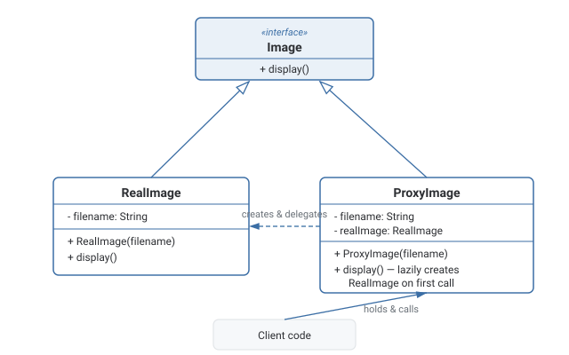

Proxy Pattern
Provides a stand-in for another object, implementing the same interface, so it can control access to the real object — deferring its creation, checking permissions, forwarding to a remote copy, or caching its results.
Theory
The problem, in plain terms
You have an Image class that loads a large file from disk when constructed — expensive. If your gallery app creates an Image object for every photo the moment the gallery loads, you pay that loading cost for a hundred photos even though the user might only ever scroll past ten of them. You want the loading to happen lazily, only when a photo is actually displayed — but you don't want every piece of calling code to manually check "has this been loaded yet?" before using it.
A Proxy solves this by implementing the same interface as the real object (Image) and standing in for it. Calling code holds a reference to the Proxy and calls methods on it exactly as if it were the real thing. The Proxy decides when to actually create or delegate to the real object — in this case, only on first access (display()) — and reuses it afterward. The caller never has to know a proxy was involved.
How it's built
A Subject interface (Image) is implemented both by the RealSubject (the expensive, real image loader) and by a Proxy class that also implements Subject. The proxy holds a reference to — or lazily creates — the real subject, and forwards calls to it, but can add logic before or after forwarding: lazy initialization, access control, logging, caching, or making a remote call look local.
Keep the proxy's public interface identical to the real subject's — the whole value of the pattern is that calling code can't tell (and shouldn't need to care) whether it's holding a proxy or the real object.
Letting the proxy leak extra methods or behavior differences that force callers to special-case it — that defeats the transparency the pattern is meant to provide.
Common Proxy variants
Virtual proxy defers expensive object creation until it's actually needed — the lazy-loading image example above. Protection proxy checks permissions before allowing a call through to the real object. Remote proxy represents an object that lives in a different address space — another process, another machine — and makes calling it look like a normal local method call. Caching proxy stores results of expensive calls and returns the cached result for repeated identical requests.
Proxy vs. Decorator (same shape, different purpose)
Structurally these two patterns are near-identical — both implement the same interface as what they wrap and delegate to it. The difference is intent. Decorator's entire purpose is adding new behavior or responsibility, typically stackable, usually created explicitly by client code that wants the extra behavior. Proxy's purpose is controlling access to the real subject — the client often doesn't even know it's holding a proxy instead of the real thing, and there's usually exactly one proxy in front of one real subject, not a stack of them.
Where it bites you
A proxy adds a layer of indirection for every call, however thin. If overused for things that don't actually need access control, laziness, or remote indirection, it's needless complexity. Proxies that silently change behavior — for instance, silently caching stale data — can also introduce surprising bugs if the caller genuinely expected the real object's live behavior.
Diagram

When to Use
- Creating or accessing the real object is expensive, and you want to defer that cost until it's actually needed (virtual proxy).
- You need access control/permission checks in front of an object without changing the object itself (protection proxy).
- The real object lives elsewhere — another process, service, or machine — and you want calling code to interact with it as if it were local (remote proxy).
- You want to cache results of expensive operations transparently to the caller (caching proxy).
- Access to the real object is cheap and unrestricted — there's nothing to control or defer, so a proxy is pure overhead.
- What you actually want is to add new behavior/responsibility rather than control access — that's Decorator, and usually implies stacking, which Proxy typically doesn't.
What interviewers are actually listening for: naming the specific proxy variant relevant to the scenario (virtual, protection, remote, caching) rather than a vague "it controls access." Also, clearly separating Proxy from Decorator by intent (access control vs. behavior addition) even though the class structure looks nearly identical — this is one of the most commonly confused pattern pairs in interviews.
Real-World Examples
- Java's
java.rmiremote proxies — a local stub object implements the same interface as a remote object, forwarding calls across the network while looking like a normal local method call. - Spring AOP proxies — Spring wraps beans in dynamic proxies to add cross-cutting behavior (transactions, security checks, logging) around method calls, without the underlying bean class knowing anything about it.
- Lazy-loading ORMs (Hibernate lazy associations, Django's lazy querysets) — a proxy object stands in for a related entity/collection and only hits the database when the data is actually accessed.
- CDNs / caching reverse proxies (Varnish, CloudFront) — sit in front of the real origin server, serving cached responses when possible and only forwarding to the real server when necessary.
- Virtual proxies in image/document viewers — a placeholder stands in for a large image or document, loading the real content only when it's scrolled into view or opened.
Interview Questions
Click a question to reveal the answer.
Name the common variants of Proxy and what each solves.
Virtual proxy defers expensive object creation until actually needed. Protection proxy checks permissions before letting a call through to the real object. Remote proxy represents an object living in another process/machine, making the call look local. Caching proxy stores results of expensive operations and returns cached results for repeat requests.
How is Proxy different from Decorator, given both implement the same interface as what they wrap?
Intent. Decorator's purpose is adding new behavior/responsibility, typically stackable and explicitly chosen by the client for the extra behavior. Proxy's purpose is controlling access to the real subject — the client often doesn't even know it's holding a proxy, and usually there's exactly one proxy in front of one real subject rather than a stack of them.
In a virtual proxy for lazy loading, where does the "real" object get created?
Inside the proxy's method that requires it, on first access — the proxy holds a reference (often null initially) to the real subject, and creates it the first time a method is called that actually needs the real data. Subsequent calls reuse the already-created real object.
How does Proxy relate to how ORMs implement lazy loading?
An ORM often returns a proxy object in place of a related entity or collection. That proxy looks and behaves like the real entity/collection to calling code, but the actual database query to fetch the real data only fires the first time a property on it is actually accessed — deferring the cost exactly like a virtual proxy.
Code & Output
Same pattern, four languages. Every output shown here was captured from a real run — note that "Loading... from disk" only prints once, on the first display() call, not the second.